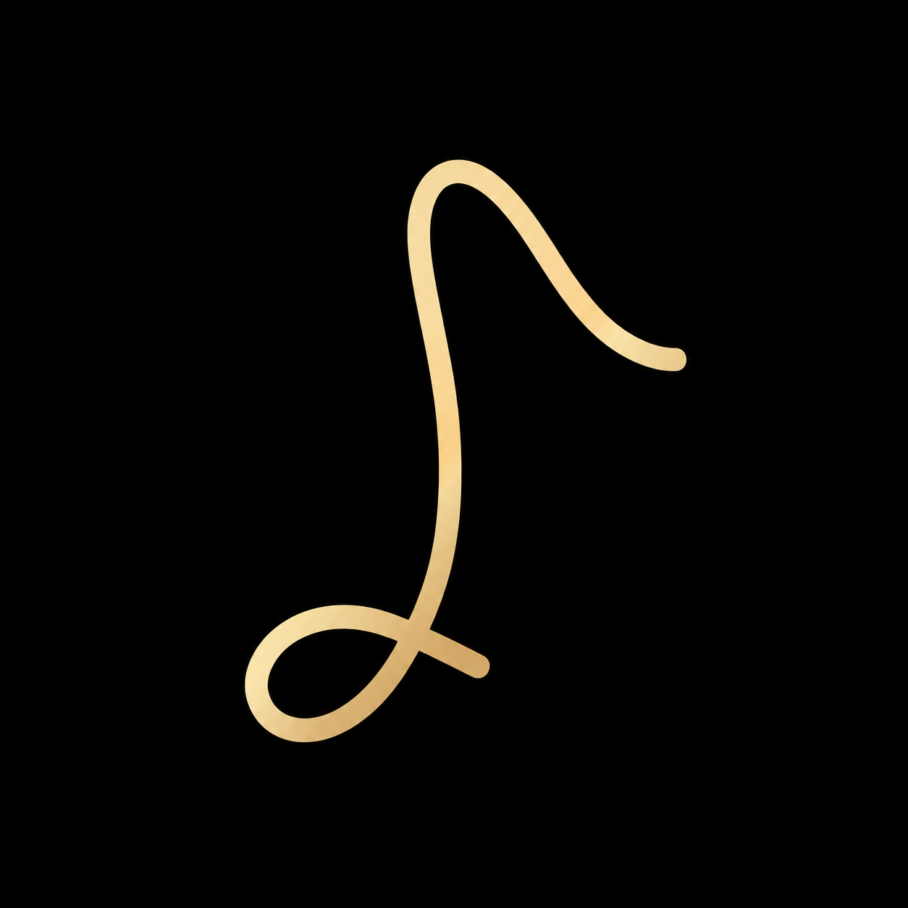

Multi-Track Music
No project open
0:00
EQ
Reverb
Master
Drop Mixdown Audio
✕
Multi-track recorder.
Video + WAV, separate files.
tracks
Select Folder
Choose inputs
Camera
Microphone / Audio interface
← Back
Start →
tap to exit
0:00 / —
—